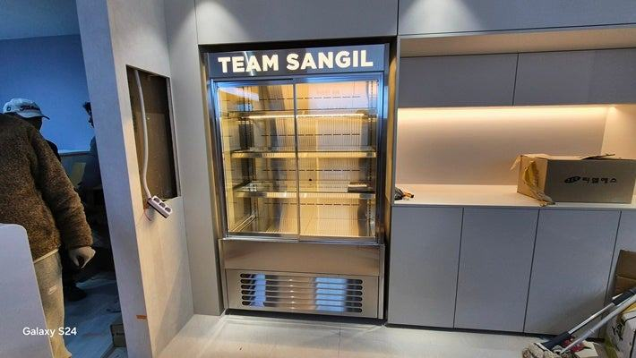
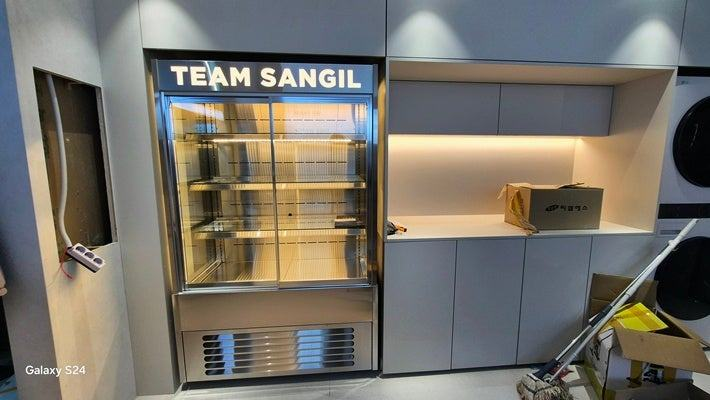
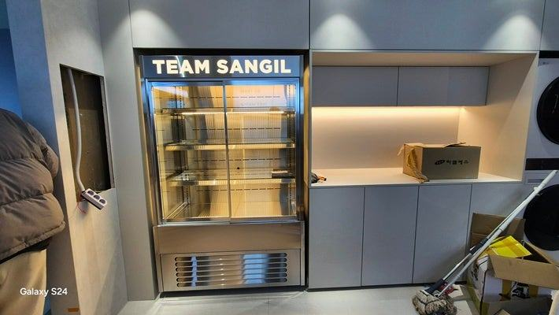
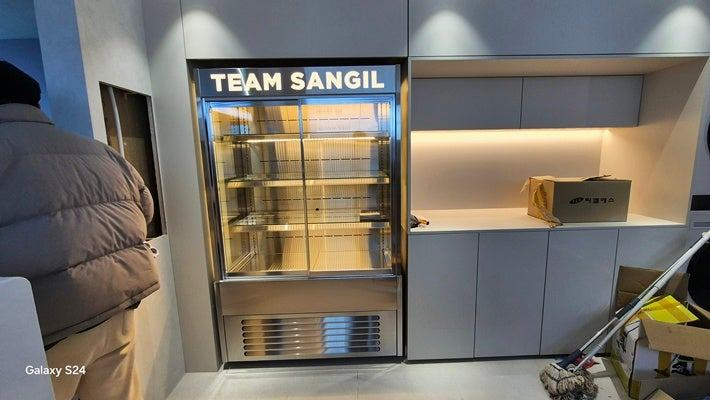
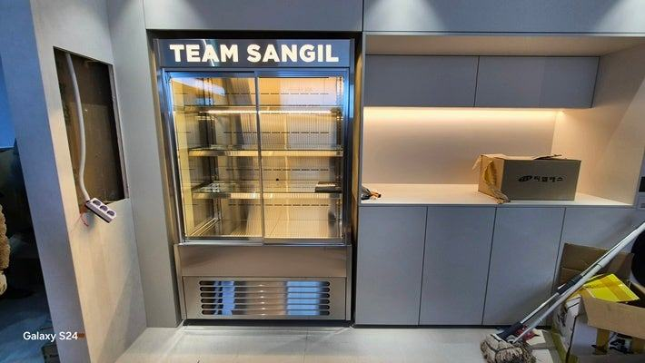
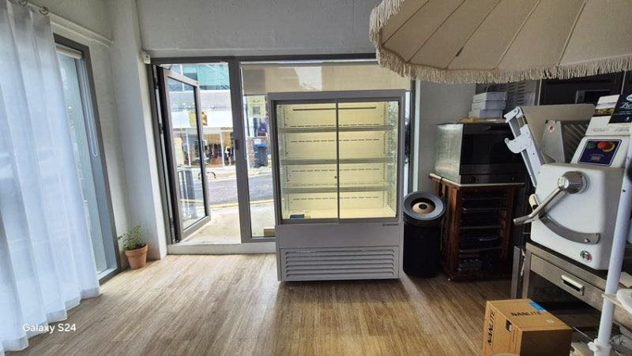
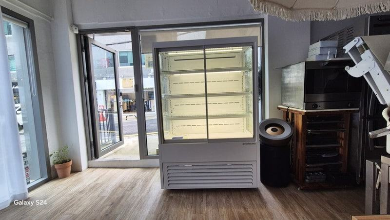

와인(음료)쇼케이스
업소용음료수냉장고 추천, 매장 유형별로 먼저 볼 것

업소용음료수냉장고는 손님이 직접 문을 열고 꺼내는 매장이면 문 개폐가 잦아도 온도가 빨리 회복되는 구성을, 직원이 꺼내 주는 매장이면 인테리어와 어울리는 색상·조명을 우선해서 고르시는 것이 좋습니다. 여기에 들어갈 자리의 폭과 열 배출 공간을 맞추면 대부분의 고민이 정리됩니다.
안녕하세요. 음료 쇼케이스와 와인셀러를 매장에 맞춰 제작하는 한성쇼케이스입니다.
"음료수 냉장고 하나 추천해 주세요"라는 질문을 자주 받습니다. 그런데 같은 질문이라도 편의점, 카페, 고깃집, 와인바에 맞는 답이 다 다릅니다.
매장에서 음료를 누가, 얼마나 자주 꺼내느냐가 다르기 때문입니다.
모델명부터 비교하기 전에 우리 매장이 어떤 유형인지 먼저 정리해 두시면 선택지가 확 줄어듭니다.
오늘은 업소용음료수냉장고를 고르실 때 매장 유형별로 먼저 봐야 할 것과, 기성품과 맞춤 제작 중 어느 쪽이 맞는지 판단하는 기준을 정리해 보겠습니다.
1. 손님이 직접 꺼내는 매장
편의점, 무인 매장, 셀프 음료 코너가 있는 식당은 손님이 하루 종일 문을 엽니다. 이런 매장은 문을 연 뒤 내부 온도가 얼마나 빨리 회복되는지가 가장 중요합니다.
팬으로 냉기를 돌리는 방식은 내부 온도가 고르게 유지돼 문 앞쪽 음료도 시원하게 지키기 좋습니다.
문 손잡이 높이와 여닫는 방향도 보셔야 합니다. 통로가 좁다면 문이 열리면서 손님 동선을 막지 않는지, 여러 대를 나란히 둘 때 문끼리 부딪히지 않는지 확인해 보세요.
- 문을 연 뒤 온도 회복이 빠른 구성인지 보세요.
- 통로 폭과 문 여닫는 방향을 함께 확인하세요.
2. 직원이 꺼내 주는 매장
카페 카운터 뒤, 와인바, 고급 식당처럼 직원이 음료를 꺼내 드리는 매장은 냉장고가 손님 시야 안에 놓인 인테리어 요소가 됩니다.
이런 곳은 성능은 기본으로 두고, 프레임 색과 조명이 매장 톤과 어울리는지를 먼저 보시는 것이 좋습니다.
차가운 톤의 매장에는 화이트펄처럼 깔끔한 색이, 묵직하고 고급스러운 분위기에는 블랙펄이나 실버스텐 같은 톤 다운된 색이 잘 맞습니다.
기성품은 색 선택지가 한두 가지로 제한된 경우가 많아 이 부분에서 아쉬움이 생기기 쉽습니다.


3. 조명 색으로 음료가 달라 보입니다
음료 냉장고 조명은 진열 효과를 크게 좌우합니다. 탄산음료나 생수처럼 라벨과 투명함이 중요한 음료는 주광색이나 주백색처럼 밝고 선명한 빛에서 깔끔하게 보입니다.
와인이나 수제 맥주처럼 병 색과 분위기가 중요한 음료는 핑크색이나 전구색 계열이 색감을 부드럽게 살려 줍니다.
매장 조도도 함께 보세요. 매장이 어두운데 냉장고 안만 지나치게 밝으면 눈이 부시고, 매장이 밝은데 냉장고 조명이 약하면 음료가 묻혀 보입니다.
- 선명함이 필요하면 주광색·주백색
- 분위기가 필요하면 핑크색·전구색
4. 기성품과 맞춤 제작, 언제 무엇을
들어갈 자리에 여유가 있고 색과 조명에 크게 신경 쓰지 않아도 되는 매장이라면 기성품도 충분히 선택지가 됩니다.
반대로 벽 사이 정해진 폭에 꼭 맞춰야 하거나, 매장 톤에 맞는 색과 조명이 필요하다면 맞춤 제작이 맞습니다.
맞춤 제작은 비쌀 거라고 생각하시기 쉽지만, 중간 유통 없이 공장에서 바로 보내는 구조라면 유통 마진이 빠져 부담이 줄어듭니다.
냉장고 상단에 매장 이름이나 로고를 넣는 각인도 가능해 별도 간판 없이 브랜딩 효과를 낼 수 있습니다.
체크리스트
- 음료를 꺼내는 사람이 손님인지 직원인지
- 문 개폐 빈도와 온도 회복
- 통로 폭과 문 여닫는 방향
- 매장 톤에 맞는 프레임 색
- 음료 종류에 맞는 조명 색
- 들어갈 자리 폭과 열 배출 공간
현장에서 자주 보는 경우: 성능만 보고 골랐다가 매장과 따로 노는 냉장고
와인과 음료를 진열하는 매장에서 자주 듣는 아쉬움이 있습니다. 냉각 성능은 좋은 제품을 들였는데 컬러나 조명이 매장 톤과 맞지 않아 매장 앞쪽이 어색해 보인다는 것입니다.
기성품은 색이 한두 가지로 정해져 있고 조명 색은 거의 고를 수 없는 경우가 많기 때문입니다.
그래서 상담 때는 성능과 함께 화이트펄·블랙펄·실버스텐 같은 컬러, 핑크색·주광색·주백색·전구색 네 가지 조명, 상부 글자 각인까지 매장에 맞춰 고르시도록 안내합니다.
공장에서 바로 보내는 구조라 맞춤 제작이어도 가격 부담을 줄일 수 있고, 1년 무상 A/S도 함께 지원합니다.







자주 묻는 질문
음료수 냉장고는 몇 도에 맞추는 게 좋나요?
판매하는 음료와 운영 방식에 따라 다릅니다. 탄산음료, 주류, 와인처럼 종류가 섞여 있다면 진열 품목을 알려 주시면 맞는 구성을 함께 안내해 드립니다.
기존 냉장고 옆에 같은 높이로 한 대 더 넣을 수 있나요?
기존 제품의 높이와 폭, 들어갈 자리 치수를 알려 주시면 나란히 놓았을 때 선이 맞도록 맞춰 제작할 수 있습니다.
로고 각인은 어디에 들어가나요?
냉장고 상단에 매장 이름이나 로고를 각인하는 방식입니다. 크기와 위치는 매장 콘셉트에 맞춰 상담 때 함께 정합니다.
매장 조건에 맞춰 만드는 한성쇼케이스
원하시는 제품 사진과 설치할 공간 사진만 보내 주셔도 매장에 맞는 구성을 추천해 드립니다.
- 전국 240여 개 A/S 전담 센터 운영
- 본사 대량 자재 매입으로 품질 대비 합리적인 가격
- 유럽제·삼성 냉각 콤프레셔 적용
- 국내 최초 쇼케이스 전문 디자이너 상주
매장 폭과 원하는 진열 구성을 알려 주세요. 실측과 견적을 안내해 드립니다.
031-986-2458